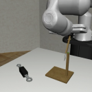
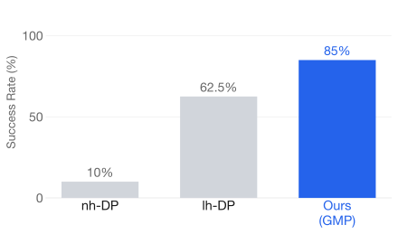
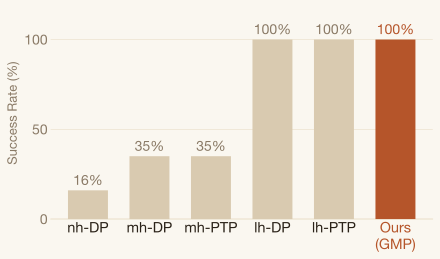
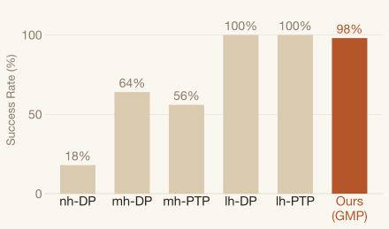
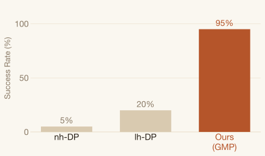
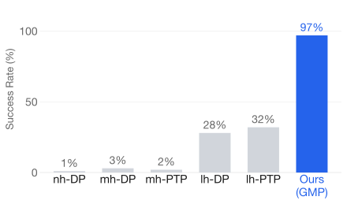
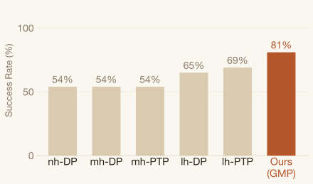
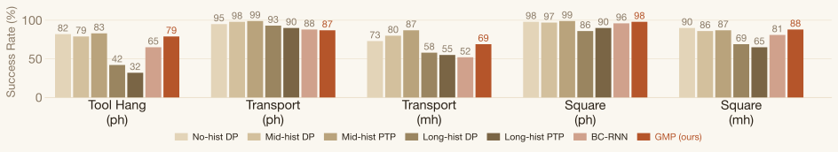
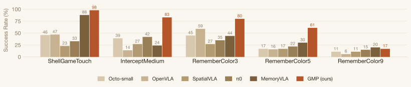

Gated Memory Policy
Stanford University
Stanford University
Today's visuomotor policies pick, place, fold, and push reliably from a single observation. But many of the tasks we want robots to do are not like this. Casting an object so it stops in a target area depends on the outcomes of earlier attempts. Returning a cup to its original position depends on remembering where it started, once the cup has left the frame. Matching a bin color to a cue shown a minute earlier depends on holding that cue until the moment it is used. The manipulation itself is unchanged in each case; what changes is that the right action now depends on something the policy observed earlier.



Tool Hang.1 The robot inserts a hook into a base and hangs a wrench on it. Precision-heavy, but every action is determined by the current frame, so history adds no signal.
Continuous Place Back. After placing a cup on a saucer, the robot returns it to within 5 cm of where it started. The start position is seen only once, so the policy must hold it in working memory across the motion.
Iterative Casting. The robot casts an object to stop between two green lines across three attempts. Friction is hidden but fixed, so the policy infers it from earlier outcomes and adjusts across trials.
In-trial and cross-trial tasks need some form of history. Giving the policy more history is the natural response, but it is not free: naively extending the observation window often degrades performance. As history grows, the input space expands while the training data stays fixed, and the model overfits. A few noisy or unfamiliar frames can then shift the entire input sequence out of distribution at test time. Long windows are also expensive: self-attention scales quadratically in history length, slowing both training and inference. Together, these effects make history-based policy designs unreliable and inefficient in practice.2
Gated Memory Policy (GMP) addresses these costs with three coupled choices. A binary memory gate, calibrated offline on a held-out validation split and frozen before the final policy is retrained on the full dataset, decides at each timestep whether the policy consults its history. When the gate opens, the policy reads from history through a cross-attention block rather than self-attention, so inference cost scales linearly in history length instead of quadratically; each past image is stored as a single aggregated token, keeping the cache compact. Both at training and inference time, past actions fed into the history module are noised one step cleaner than the current prediction target on the same diffusion schedule. This exposes the policy to imperfect history throughout and discourages reliance on perfectly accurate past actions.
With these components in place, GMP handles all three task types introduced above. It adapts across trials, inferring a hidden friction coefficient from prior failed attempts in Iterative Casting. It recalls spatial and visual cues across long delays, retaining the original color across up to 6000 image frames (about ten minutes at 10 fps) in the Match Color (Sim) with Random Delay task. On MemMimic, the sim-and-real suite we release alongside GMP, it improves the average success rate by 30.1% over the strongest long-history baseline and by 47.0% over the LSTM-based BC-RNN baseline. It stays comparable to no-history baselines on Robomimic Markovian tasks (where long-history baselines otherwise regress) and outperforms the prior retrieval-based memory method MemoryVLA on MIKASA-Robo by 26.6% on average.3
We release GMP alongside MemMimic, the gate calibration pipeline, an in-the-wild deployment stack (iPhUMI), and trained checkpoints, so other groups can iterate on memory designs without rebuilding scaffolding. The rest of this page names the three memory regimes these tasks fall into, describes how GMP is built, and works through the evaluation on MemMimic (in both simulation and real-world setups), in-the-wild deployment beyond the lab, and two established benchmarks (Robomimic and MIKASA-Robo).
The three tasks above each correspond to a distinct memory regime, inspired by analogous concepts in psychology. We separate the regimes by how far back in time the relevant signal sits relative to the current action, and use them to organize the rest of this post and the evaluation that follows.
The optimal action depends only on the current observation. Most single-step manipulation falls in this regime, and adding history typically degrades rather than helps performance. The Robomimic tasks (Tool Hang, Square, Transport) are representative.
A task-relevant cue is observed once within an episode and then leaves view. The policy must retain it through subsequent timesteps and use it at a later decision. Matching a bin color after the colors are shuffled, or returning a cup to its original position, are canonical cases.
A physical parameter (such as friction or mass) is fixed within an episode but varies between episodes. The policy must infer it from the outcomes of earlier trials. Iterative casting and pushing with unknown friction, and flinging cloth of unknown mass, all sit here.
Every demo that follows is tagged with the regime it belongs to. The method is evaluated on at least one task per regime, across simulation and real hardware.
GMP uses a single architecture across all three regimes. It factors the problem into two questions, when to recall history and what to recall, and gives each question its own learnable component: a binary memory gate that controls whether the history path is active at each timestep, and a cross-attention block that reads from a per-frame token cache when it is.
GMP uses the Diffusion Transformer (DiT) as its backbone and adds a cross-attention module for history conditioning. A binary memory gate μt, computed from the current image and proprioception, decides at each timestep whether history cross-attention is applied. The history cache stores one aggregated visual token per past frame plus the paired action tokens, so inference scales linearly in history length (and stays constant when the gate is off).4

Training the memory gate jointly with the policy is unstable: without regularization the policy uses as much history as possible and overfits on Markovian tasks; too strong a regularizer suppresses history use and hurts non-Markovian performance. We sidestep this with offline calibration:

Three design choices determine whether GMP generalizes across regimes: how the memory gate is calibrated, how history tokens are read at each inference step, and what noise the history is exposed to during training and inference. Each is modest in isolation; together they let one configuration cover Markovian, in-trial, and cross-trial tasks without per-task tuning.5
Jointly training the gate with the policy is unstable. GMP therefore calibrates the gate on a held-out split: a memory-required label is assigned where the no-memory error exceeds the memory error by a ratio threshold, and the gate MLP is trained on those labels with BCE loss and frozen before the final policy is retrained on the full dataset.
Each past frame is pooled into a single aggregated visual token via multi-head attention pooling over a pretrained SigLIP2-B/16 ViT. History tokens are cached in a sliding window and reused across denoising steps without recomputation. Cross-attention (rather than self-attention) keeps cost linear in history length; when the gate is off, history attention is skipped entirely and cost stays constant.
Historical actions fed to the module are noised on the same diffusion schedule as the prediction target, at a noise level one denoising step cleaner, during both training and inference. This keeps predictions stable when deployed action traces are stale or imprecise.
We evaluate GMP on MemMimic, a suite we developed to probe in-trial and cross-trial memory in simulation and on real hardware. In-trial tasks require the policy to recall a single cue observed earlier in the same episode. Cross-trial tasks require it to infer a hidden physical parameter (surface friction or object mass) from the outcomes of multiple attempts within an episode. Recent benchmarks such as MIKASA-Robo have sharpened single-trial retention evaluation; MemMimic extends that direction with multi-trial in-context adaptation and pairs several simulated tasks with matched real-world setups so transfer can be measured directly.
In-trial tasks require the policy to recall a cue observed earlier within a single episode. The relevant context appears once; the policy must encode and retain it to succeed at a later decision point.
A cup and a saucer are randomly placed on the table. The robot must first place the cup on the saucer and then return it to within 5 cm of its original position.
Tests spatial memory under real-world observation noise, stressing the diffusion-noise augmentation.


The robot picks up a cube from one of 4 bins with randomly assigned colors. Once the cube is picked up, the bin colors are shuffled, and the robot needs to put the cube back in the bin with the original color.
Tests whether cross-attention retrieves the right frame at the right moment.

A cube is randomly placed in one of four bins, and the robot picks it up, holds it in the air for 2 seconds before returning it to the original bin.
Tests spatial recall across a 2-second occlusion gap, the minimal working-memory setting.

In cross-trial tasks, a physical parameter is randomly sampled per episode and hidden from the policy. The robot is given multiple trials and must leverage outcomes from earlier attempts to adapt.
The robot needs to cast the object with an unknown friction coefficient so that the object stops sliding between two green lines. The robot stops at the same position in each trial and adaptively adjusts its casting speed. In each episode, the robot is allowed 3 casting attempts. The episode is considered successful if the last 2 trials are successful.
Tests in-context adaptation from prior trial outcomes, the motivating example for gated recall.

In each episode, the friction coefficient of the cube is randomly sampled from 0.005 to 0.015 and is unknown during testing. The policy is given 6 trials to push the object to the target region (red box). An episode is considered successful if the cube stops within the target region in all of the last 3 trials.
Tests cross-trial adaptation across a continuous parameter range.

The robot must fling the cloth so that its far edge lands in the target (black) area. In each episode, the cloth's mass is randomly sampled between 0.1 kg and 2.0 kg, and the robot is allowed five flings. Flinging too slowly prevents the cloth from fully extending, while flinging too fast causes it to fold back on itself, both resulting in failure. An episode is considered successful if the last 3 trials are all successful.
Tests cross-trial adaptation on deformable dynamics with unknown cloth mass.

MemMimic's real-world tasks are evaluated in a controlled lab setting. As a stronger generalization test, we deploy GMP outdoors with no change to the checkpoint: 40 Continuous Place Back trials across backgrounds, lighting, surfaces, and cup placements never seen at training time. A subset of trials includes human perturbation, where we flip the cup over by hand mid-task. Deployment uses the same checkpoint across all trials; no per-scene tuning is applied. All videos below play at 1× speed.
The lab and outdoor results above show that GMP works. The attention weights show where it looks. We visualize causal cross-attention over history tokens at each inference step to see which past frames the policy draws from when computing the next action. Across tasks, the weights concentrate on frames that carry task-relevant information (the moment a cue was first observed, or the outcome of a prior trial) rather than spreading uniformly across the available history. This is consistent with the role the gate is intended to play.6
To confirm that GMP is not narrowly tuned to MemMimic, we evaluate it on two existing benchmarks. Robomimic stresses Markovian precision manipulation, where adding history is expected to hurt rather than help; the question is whether the gate correctly disables itself and preserves no-history performance. MIKASA-Robo isolates single-trial memory retention across a range of task families we did not design; the question is whether the cross-attention mechanism transfers to memory problems set by other groups.

We evaluate 3 tasks from the Robomimic benchmarks: Tool Hang, Square, and Transport. (ph, mh) indicate that the data were collected from proficient-human (ph) or multi-human (mh). While most long-history policies experience performance drops on these Markovian tasks, GMP maintains competitive performance by leveraging the gating mechanism.

We evaluate 5 tasks on the MIKASA-Robo benchmark, outperforming prior work MemoryVLA by 26.6% on average. The baseline performance statistics are reported in MIKASA-Robo and MemoryVLA.
GMP is consistent across MemMimic, Robomimic, and MIKASA-Robo, but the current design has two scope limits worth naming.7
First, the attention window is finite. GMP attends over up to 6000 image frames (about ten minutes at 10 fps), which means it cannot leverage an unbounded memory context and may lose access to critical information over much longer sequences. Pushing further will likely require selective caching and token-replacement strategies based on importance, so that high-value tokens from the distant past are retained within a fixed attention budget.
Second, the gate calibration uses action-prediction error as a proxy for memory dependency. This proxy works well on the tasks we evaluate, but it may be unreliable for tasks with intrinsic action ambiguity or environments with high uncertainty. Incorporating additional signals, such as task semantics, into the memory-retrieval criteria is a natural next direction.
The memory gate helps when the policy significantly overfits to history observations. This typically happens in tasks that require high precision manipulation and where there is not enough data to cover the expanded input space that memory introduces. A concrete example is Tool Hang in Robomimic. The gate also helps when reactiveness matters: it reduces runtime and makes the model more efficient. That said, for most of the memory intensive tasks in our benchmark, adding the gate does not significantly improve performance. A practical approach is to first train the model without a gate (a simplified version of GMP), run evaluation, and then add gates when the model fails due to the issues above.
We only include a single aggregated token from a ViT per image (e.g., the class token in CLIP or the MAP token in SigLIP), and all history tokens are cached. The cross attention module also scales linearly in history length. As a result, the total inference time is similar to that of a policy without memory. We release an in the wild checkpoint so anyone can try it in the real world.
Please read through the README.md in each folder of the codebase carefully. The experiment details in the paper's appendix will also be helpful. If your problem is still not solved, feel free to submit a GitHub issue with a detailed description.
Due to the strong scalability of cross attention, the history length is only bottlenecked by training GPU memory. By caching visual features and freezing a pretrained image encoder, our model is able to attend to 6,000 image frames (with paired actions), achieving memory recall of up to 10 minutes at 10 fps. Please refer to Finding 7 for more details.
The robot may appear frozen for long stretches, which is expected: we are stress testing the policy's memory duration. At the end, once the bin colors shuffle, the robot places the cube back in its original bin. Both clips play at real time speed (10 fps); hover to reveal the progress bar and drag to skim through the full episode.
We thank Austin Patel for developing the iPhUMI app, which enabled in-the-wild data collection and deployment; Chiling Han for assistance with the baseline experiments; and Mengda Xu and Huy Ha for guidance on MuJoCo simulation. We also thank members of REALab for feedback on the manuscript and presentation, and Yuejiang Liu, Moo Jin Kim, John Yao, Shang Yang, Genghan Zhang, and Dongchen Han for discussions during this work.
We would like to thank TRI for providing the UR5 robot hardware and ARX for the X5 robot hardware. We thank Apple for providing the iPhone 15 Pro. We also thank Stanford Marlowe for providing computational resources.
This work was supported in part by NSF Awards #2143601, #2037101, and #2132519. The views and conclusions contained herein are those of the authors and should not be interpreted as necessarily representing the official policies, either expressed or implied, of the sponsors.
Questions about the work?
Problems with the codebase?
 arXiv
arXiv